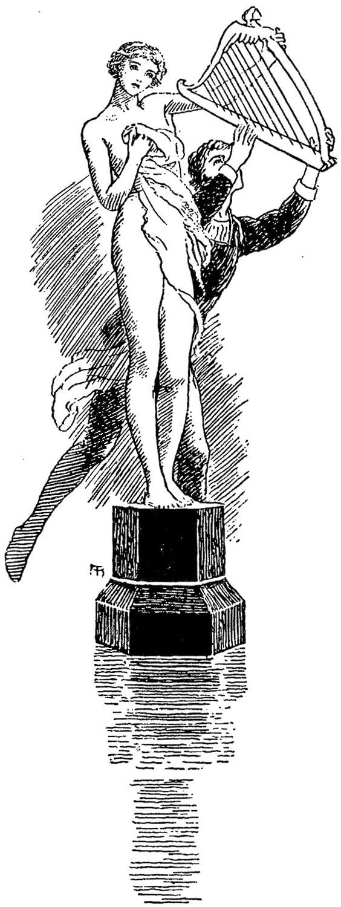

Apelles. ‘Never finish: for always in absolute beauty there is somewhat above art.’”
LYLY’S Campaspe.
And now, what song should I sing to unveil my Isis, if indeed she was present unseen? I hurried away to the white hall of Phantasy, heedless of the innumerable forms of beauty that crowded my way: these might cross my eyes, but the unseen filled my brain. I wandered long, up and down the silent space: no songs came. My soul was not still enough for songs. Only in the silence and darkness of the soul’s night, do those stars of the inward firmament sink to its lower surface from the singing realms beyond, and shine upon the conscious spirit. Here all effort was unavailing. If they came not, they could not be found.
Next night, it was just the same. I walked through the red glimmer of the silent hall; but lonely as there I walked, as lonely trod my soul up and down the halls of the brain. At last I entered one of the statue-halls. The dance had just commenced, and I was delighted to find that I was free of their assembly. I walked on till I came to the sacred corner. There I found the pedestal just as I had left it, with the faint glimmer as of white feet still resting on the dead black. As soon as I saw it, I seemed to feel a presence which longed to become visible; and, as it were, called to me to gift it with self-manifestation, that it might shine on me. The power of song came to me. But the moment my voice, though I sang low and soft, stirred the air of the hall, the dancers started; the quick interweaving crowd shook, lost its form, divided; each figure sprang to its pedestal, and stood, a self-evolving life no more, but a rigid, life-like, marble shape, with the whole form composed into the expression of a single state or act. Silence rolled like a spiritual thunder through the grand space. My song had ceased, scared at its own influences. But I saw in the hand of one of the statues close by me, a harp whose chords yet quivered. I remembered that as she bounded past me, her harp had brushed against my arm; so the spell of the marble had not infolded it. I sprang to her, and with a gesture of entreaty, laid my hand on the harp. The marble hand, probably from its contact with the uncharmed harp, had strength enough to relax its hold, and yield the harp to me. No other motion indicated life. Instinctively I struck the chords and sang. And not to break upon the record of my song, I mention here, that as I sang the first four lines, the loveliest feet became clear upon the black pedestal; and ever as I sang, it was as if a veil were being lifted up from before the form, but an invisible veil, so that the statue appeared to grow before me, not so much by evolution, as by infinitesimal degrees of added height. And, while I sang, I did not feel that I stood by a statue, as indeed it appeared to be, but that a real woman-soul was revealing itself by successive stages of imbodiment, and consequent manifestatlon and expression.

Arches white on rosy heel!
Whence the life-spring, throbbing, panting,
Pulses upward to reveal!
Fairest things know least despising;
Foot and earth meet tenderly:
’Tis the woman, resting, rising
Upward to sublimity,
Strong and gentle, full and free;
Soft and slow, like certain hoping,
Drawing nigh the broad firm knee.
Up to speech! As up to roses
Pants the life from leaf to flower,
So each blending change discloses,
Nearer still, expression’s power.
Up and outward fearlessly!
Temple columns, close combining,
Lift a holy mystery.
Heart of mine! what strange surprises
Mount aloft on such a stair!
Some great vision upward rises,
Curving, bending, floating fair.
Lead my fascinated eye;
Some apocalypse will follow,
Some new world of deity.
Zoned unseen, and outward swelling,
With new thoughts and wonders rife,
Queenly majesty foretelling,
See the expanding house of life!
Sighs eternal, still the same—
Mounts of snow have summits hidden
In the mists of uttered flame.
But the spirit, dawning nearly
Finds no speech for earnest pain;
Finds a soundless sighing merely—
Builds its stairs, and mounts again.
Sendeth out her waiting pair;
Hands, blind hands, half blindly groping,
Half inclasping visions rare;
And the great arms, heartways bending;
Might of Beauty, drawing home
There returning, and re-blending,
Where from roots of love they roam.
Spirit, fair with womanhood!
Tower thy precipice, white-gleamy,
Climb unto the hour of good.
Dumb space will be rent asunder,
Now the shining column stands
Ready to be crowned with wonder
By the builder’s joyous hands.
Like a fountain’s falling race.
Lo, the chin, first feature, treading,
Airy foot to rest the face!
Speech is nigh; oh, see the blushing,
Sweet approach of lip and breath!
Round the mouth dim silence, hushing,
Waits to die ecstatic death.
Bow of promise, upper lip!
Set them free, with gracious swerving;
Let the wing-words float and dip.
Dumb art thou? O Love immortal,
More than words thy speech must be;
Childless yet the tender portal
Of the home of melody.
Proud in calm unconsciousness,
Sure it must be something peerless
That the great Pan would express!
Deepens, crowds some meaning tender,
In the pure, dear lady-face.
Lo, a blinding burst of splendour!—
’Tis the free soul’s issuing grace.
Circling round unfathomed deeps!
Lightning-flashes, transitory,
Cross the gulfs where darkness sleeps.
This the gate, at last, of gladness,
To the outward striving me:
In a rain of light and sadness,
Out its loves and longings flee!
Dumb, with a foreknown surprise;
Presence greater yet than written
Even in the glorious eyes.
Through the gulfs, with inward gazes,
I may look till I am lost;
Wandering deep in spirit-mazes,
In a sea without a coast.
Time and space, oh, far beyond!
Woman, ah! thou art victorious,
And I perish, overfond.
Springs aloft the yet Unspoken
In the forehead’s endless grace,
Full of silences unbroken;
Infinite, unfeatured face.
Height and hollow wrapt in night;
Hiding in its caverns under
Woman-nations in their might.
Passing forms, the highest Human
Faints away to the Divine
Features none, of man or woman,
Can unveil the holiest shine.
Visible to passing eye,
Stand the silent, doorless, lonely
Entrance-gates of melody.
But all sounds fly in as boldly,
Groan and song, and kiss and cry
At their galleries, lifted coldly,
Darkly, ’twixt the earth and sky.
So, in faint, half-glad despair,
From the summit thou o’erflowest
In a fall of torrent hair;
Hiding what thou hast created
In a half-transparent shroud:
Thus, with glory soft-abated,
Shines the moon through vapoury cloud.